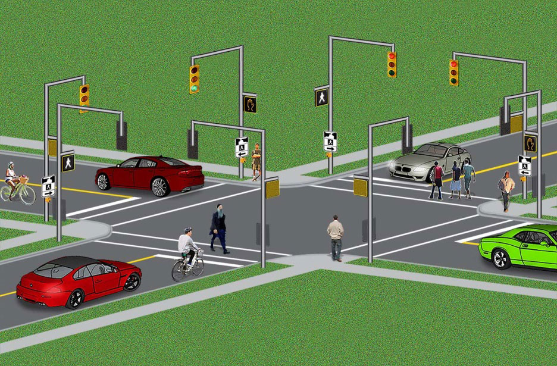

My Projects

Real-Time FPGA Image Processing
Click to view full project
I²C Protocol (Master + 5 Slaves)
Click to view full project

Sobel Edge Detection (Verilog + Python)
Click to view full project details

46-Filter Verilog Image Engine
Click to view full project

Synchronous FIFO (Verilog)
Click to view full project details

Smart Traffic Light FSM
Click to view full project

Sequential Circuits in Verilog
Click to view full project